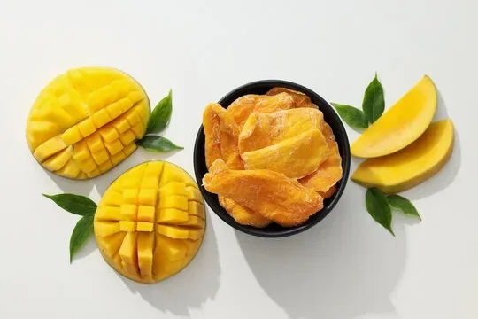
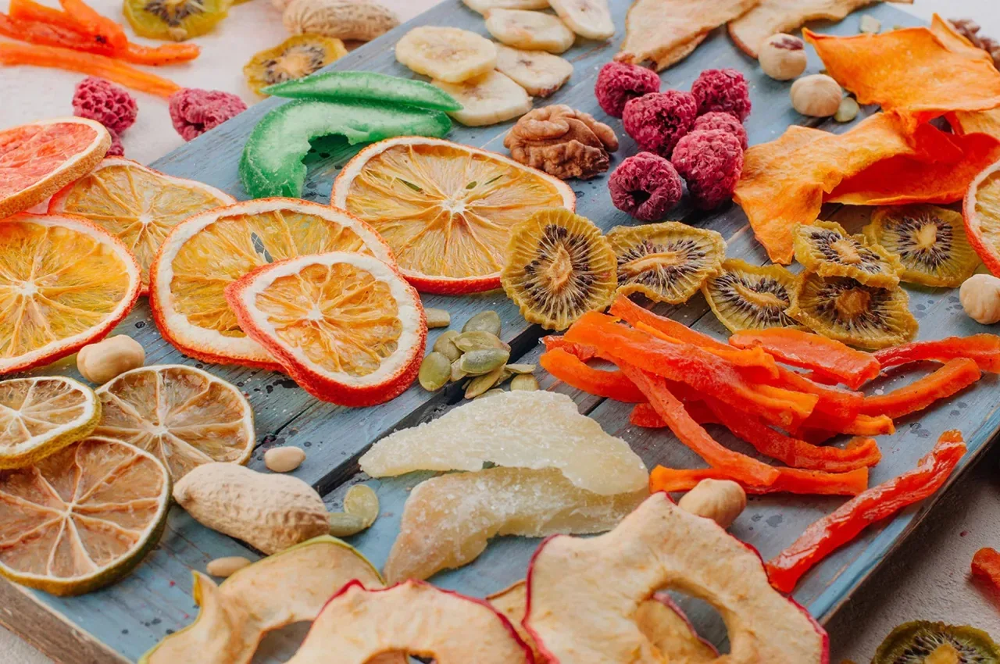
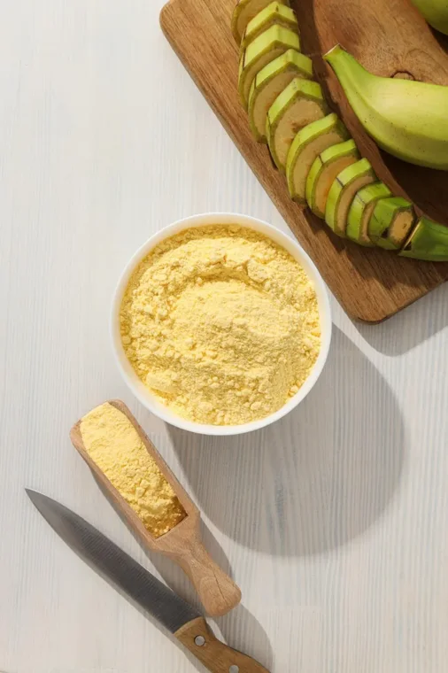

Fruits
Mangue séchée
À grignoter ou à couper dans un muesli.
PRODUITS SÉCHÉS DU CAMEROUN
De la mangue séchée aux feuilles de ndolé, découvrez des ingrédients camerounais pour le petit-déjeuner, les pauses et les plats mijotés.

Produits
Recherchez un ingrédient ou choisissez une catégorie. Enregistrez vos produits pour demander les prix et la disponibilité.
Aucun produit ne correspond. Essayez un autre terme.

À grignoter ou à couper dans un muesli.

Pour les yaourts, les bols du matin ou les pauses.
Pour varier les mueslis et les mélanges à grignoter.

Pour les sauces, les plats de riz et les farces salées.

Un ingrédient du plat camerounais aux arachides.

À utiliser dans les recettes qui prévoient de la farine de manioc.

À tester dans des recettes à base de farine de plantain, comme les galettes.
Coupez la mangue séchée en petits morceaux et mélangez-la à des flocons d’avoine, du yaourt et des graines grillées. Ajoutez un filet de citron vert.
Good Food · Tropical muesli bowlsAu Cameroun, le mot ndolé désigne les feuilles amères et le plat. Les feuilles sont préparées avec des arachides et, selon la version, des crevettes, du poisson ou de la viande.
En savoir plus sur le plat (OMPI)À propos
DK Bio est née en 2022 avec l’idée de mieux valoriser les récoltes locales. À Douala, la marque transforme des produits camerounais en aliments séchés. Fruits, légumes et feuilles peuvent ainsi être utilisés au-delà de la saison des récoltes.
Sélectionnez des produits dans le catalogue et ouvrez votre sélection. Préparez un e-mail pour demander les prix, les formats et les possibilités de livraison.
Consultez l’étiquette de l’emballage. Avant l’achat, demandez à DK Bio l’étiquette du produit qui vous intéresse.
Contact
Deido, Douala, en face de l’école Le Petit Monde